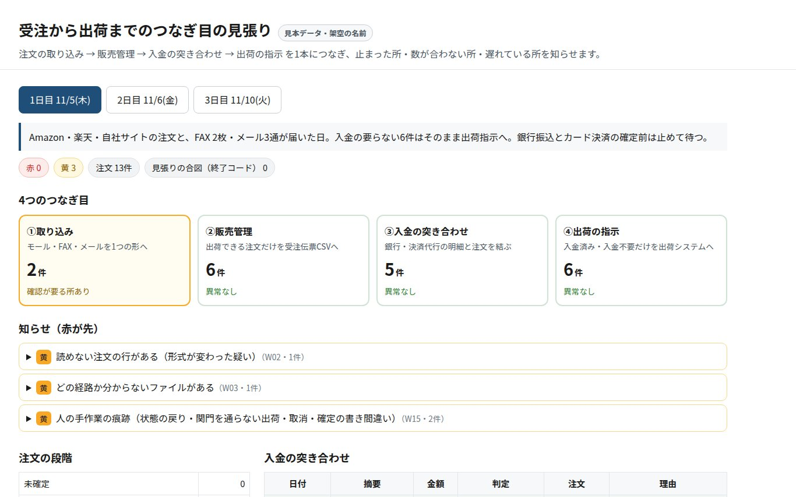

注文の入れ直し、
まだ人がやっていますか。
モール・自社EC・FAX・メールから来る注文を、今お使いの道具は変えずに、販売管理・入金の確認・出荷の指示へつなぎます。止まった所・数が合わない所は、赤と黄で直し方と一緒にお知らせします。
画面をクリックすると、1〜3日目の動きを切り替えて見られます（すべて架空の注文です）。
こんな「継ぎ目」で、毎日手が止まっていませんか。
01
注文が2〜4か所から来る
モール・自社EC・FAX・メール。それぞれを販売管理や表計算へ、人が入れ直している。
02
入金の確認が人の目だより
銀行振込や決済代行の明細と注文を、目で突き合わせてから出荷を決めている。
03
止まっても、気づくのが翌日
連携が止まった・二重に入った・未入金のまま出荷した。分かるのはお客様からの連絡のあと。
道具は変えずに、つなぎ目だけを受け持ちます。
新しいシステムへの乗り換えは求めません。今の書き出し（CSV・明細）を読み、4つのつなぎ目を毎日見張ります。
①注文の取り込み→②販売管理→③入金の突き合わせ→④出荷の指示
つなぐ
1つの形にそろえる
経路ごとに違う注文の形をそろえ、二重の注文は取り込まない。出荷できる注文だけを先へ渡します。
突き合わせる
入金と注文を結ぶ
名義と金額が合う入金だけを自動で消し込みます。名義が分からない入金は自動にせず、人の判断に回します。
知らせる
赤と黄で、直し方つき
出荷済みなのに未入金・出荷後の返金・取り込みの止まりなどを、直し方の一文と一緒にお知らせします。
見本の画面
架空のお店の3日分の注文で、実際に動かした画面です。2日目は入金の突き合わせで止まった所を赤で出しています。

1日目：注文を1つの形にそろえ、出荷できる物だけを先へ
2日目：未入金のまま出荷された注文を赤で知らせる
見本は架空のデータで動かした試作です。実在のモール・決済・販売管理との接続は、御社の書き出しの形に合わせて最初に設定します。
先にお伝えしておくこと
- 判断は人に残します。名義が分からない入金や、出荷を止めるかどうかは自動で決めません。
- 今の道具に残ります。やめる時も、御社の環境の中に仕組みが残る形で作ります。
- 効果はお店ごとに違います。計算器の数字は、入力された値からの目安です。
30分の聞き取りに、ご協力ください。
いま、注文が複数の経路から来る事業者様に、今の作業の流れと手間を伺っています。売り込みの場ではありません。費用はかかりません。